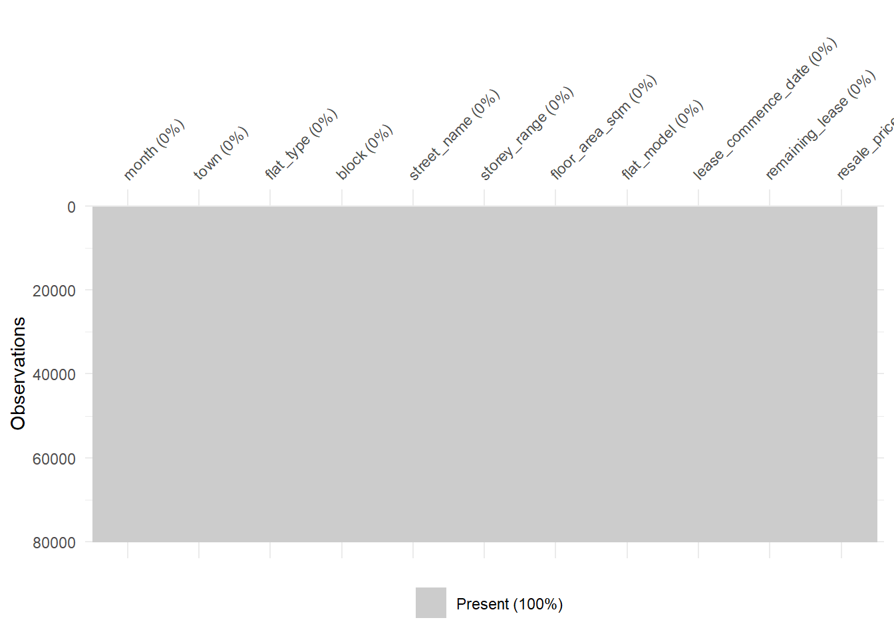

# This chunk checks if each package is installed. If not, it installs it.
if (!require("tidyverse")) install.packages("tidyverse")
if (!require("lubridate")) install.packages("lubridate")
if (!require("readr")) install.packages("readr")
if (!require("naniar")) install.packages("naniar")
if (!require("visdat")) install.packages("visdat")
if (!require("stringr")) install.packages("stringr")
if (!require("janitor")) install.packages("janitor") # This line fixes the error
if (!require("scales")) install.packages("scales")
# Load all required libraries
library(tidyverse)
library(lubridate)
library(readr)
library(naniar)
library(visdat)
library(stringr)
library(janitor)
library(scales)
# Set options for better output
options(scipen = 999) # Disable scientific notation
options(dplyr.summarise.inform = FALSE) # Suppress summarise messagesHDB Resale Data Cleaning and Transformation
AAI1001 - Data Engineering and Visualization Project
This document outlines the enhanced data cleaning and transformation process for analyzing HDB resale flat transactions. It builds upon the original script by incorporating a more dynamic approach to outlier handling for better reproducibility.
1. Setup and Library Loading
This chunk checks if each package is installed before loading it. If a package is missing, it will be automatically installed.
2. Data Loading and Initial Inspection
This section loads and combines the multiple HDB resale data CSV files into a single dataframe.
# Function to load and combine multiple CSV files
load_hdb_data <- function(file_paths) {
# We explicitly tell read_csv to treat 'remaining_lease' as a character column
# for all files to prevent type conflicts.
combined_data <- file_paths %>%
map_dfr(~ read_csv(.x,
col_types = cols(remaining_lease = col_character()),
show_col_types = FALSE)) %>%
distinct() # Remove any duplicate rows
return(combined_data)
}
# Define the paths to your files
file_paths <- c(
"2020-2025.csv"
)
# Load and combine data
raw_data <- load_hdb_data(file_paths)
raw_data <- janitor::clean_names(raw_data)
# Initial inspection
cat("Dataset dimensions:", dim(raw_data), "\n")Dataset dimensions: 146524 11 glimpse(raw_data)Rows: 146,524
Columns: 11
$ month <chr> "2020-01", "2020-01", "2020-01", "2020-01", "2020-…
$ town <chr> "ANG MO KIO", "ANG MO KIO", "ANG MO KIO", "ANG MO …
$ flat_type <chr> "3 ROOM", "3 ROOM", "3 ROOM", "3 ROOM", "3 ROOM", …
$ block <chr> "208", "307C", "319", "216", "556", "536", "560", …
$ street_name <chr> "ANG MO KIO AVE 1", "ANG MO KIO AVE 1", "ANG MO KI…
$ storey_range <chr> "04 TO 06", "19 TO 21", "01 TO 03", "04 TO 06", "0…
$ floor_area_sqm <dbl> 73, 70, 73, 73, 68, 68, 67, 82, 67, 67, 67, 67, 67…
$ flat_model <chr> "New Generation", "Model A", "New Generation", "Ne…
$ lease_commence_date <dbl> 1976, 2012, 1977, 1976, 1980, 1980, 1980, 1980, 19…
$ remaining_lease <chr> "55 years 07 months", "91 years 08 months", "56 ye…
$ resale_price <dbl> 265000, 470000, 230000, 280000, 220000, 280000, 24…3. Missing Value Analysis and Handling
Here, we visualize and quantify missing data, then remove rows where critical information is missing.
# First, create a smaller, random sample of the data for visualization.
data_sample_for_vis <- slice_sample(raw_data, n = 80000)
# Now, visualize the missing patterns on the SMALL sample. This will now work.
vis_miss(data_sample_for_vis)
# Remove rows with missing critical information from the FULL raw_data dataframe.
cleaned_data <- raw_data %>%
drop_na(resale_price, floor_area_sqm, month, town, flat_type)
cat("Rows removed due to missing critical data:", nrow(raw_data) - nrow(cleaned_data), "\n")Rows removed due to missing critical data: 0 cat("Remaining rows:", nrow(cleaned_data), "\n")Remaining rows: 146524 4. Data Type Conversion and Standardization
We convert columns to their appropriate data types and standardize text formats for consistency.
processed_data <- cleaned_data %>%
mutate(
# Convert month to proper Date format
month = ym(month),
# Ensure numeric columns are properly formatted
resale_price = as.numeric(resale_price),
floor_area_sqm = as.numeric(floor_area_sqm),
# Standardize text columns (e.g., trim whitespace, convert to consistent case)
town = str_to_upper(str_trim(town)),
flat_type = str_to_upper(str_trim(flat_type)),
flat_model = str_to_upper(str_trim(flat_model)),
street_name = str_to_title(str_trim(street_name))
)
cat("Date range:", as.character(min(processed_data$month)), "to", as.character(max(processed_data$month)), "\n")Date range: 2020-01-01 to 2025-07-01 5. Feature Engineering
We create several new, informative variables to support our analysis.
engineered_data <- processed_data %>%
mutate(
# Extract temporal features
year = year(month),
quarter = quarter(month, with_year = TRUE),
# Calculate price per square meter
price_per_sqm = round(resale_price / floor_area_sqm, 2),
# Extract storey information and create a numeric midpoint
storey_mid = sapply(str_split(storey_range, " TO "), function(x) mean(as.numeric(x))),
# Categorize flat types for broader analysis
flat_category = case_when(
flat_type %in% c("1 ROOM", "2 ROOM") ~ "Small (1-2 Room)",
flat_type == "3 ROOM" ~ "Medium (3 Room)",
flat_type %in% c("4 ROOM", "5 ROOM") ~ "Large (4-5 Room)",
TRUE ~ "Others"
)
)
cat("New variables created successfully!\n")New variables created successfully!glimpse(engineered_data)Rows: 146,524
Columns: 16
$ month <date> 2020-01-01, 2020-01-01, 2020-01-01, 2020-01-01, 2…
$ town <chr> "ANG MO KIO", "ANG MO KIO", "ANG MO KIO", "ANG MO …
$ flat_type <chr> "3 ROOM", "3 ROOM", "3 ROOM", "3 ROOM", "3 ROOM", …
$ block <chr> "208", "307C", "319", "216", "556", "536", "560", …
$ street_name <chr> "Ang Mo Kio Ave 1", "Ang Mo Kio Ave 1", "Ang Mo Ki…
$ storey_range <chr> "04 TO 06", "19 TO 21", "01 TO 03", "04 TO 06", "0…
$ floor_area_sqm <dbl> 73, 70, 73, 73, 68, 68, 67, 82, 67, 67, 67, 67, 67…
$ flat_model <chr> "NEW GENERATION", "MODEL A", "NEW GENERATION", "NE…
$ lease_commence_date <dbl> 1976, 2012, 1977, 1976, 1980, 1980, 1980, 1980, 19…
$ remaining_lease <chr> "55 years 07 months", "91 years 08 months", "56 ye…
$ resale_price <dbl> 265000, 470000, 230000, 280000, 220000, 280000, 24…
$ year <dbl> 2020, 2020, 2020, 2020, 2020, 2020, 2020, 2020, 20…
$ quarter <dbl> 2020.1, 2020.1, 2020.1, 2020.1, 2020.1, 2020.1, 20…
$ price_per_sqm <dbl> 3630.14, 6714.29, 3150.68, 3835.62, 3235.29, 4117.…
$ storey_mid <dbl> 5, 20, 2, 5, 8, 11, 5, 5, 2, 2, 8, 5, 2, 5, 2, 8, …
$ flat_category <chr> "Medium (3 Room)", "Medium (3 Room)", "Medium (3 R…6. Dynamic Outlier Boundary Calculation
Instead of using fixed values, we calculate outlier boundaries dynamically using the IQR method for each flat type. This makes our analysis more robust and reproducible.
# Calculate the lower and upper bounds for resale_price for each flat type
outlier_bounds <- engineered_data %>%
group_by(flat_type) %>%
summarise(
lower_bound = quantile(resale_price, 0.25, na.rm = TRUE) - 1.5 * IQR(resale_price, na.rm = TRUE),
upper_bound = quantile(resale_price, 0.75, na.rm = TRUE) + 1.5 * IQR(resale_price, na.rm = TRUE),
.groups = "drop"
)
print("Calculated outlier bounds for resale price:")[1] "Calculated outlier bounds for resale price:"print(outlier_bounds)# A tibble: 7 × 3
flat_type lower_bound upper_bound
<chr> <dbl> <dbl>
1 1 ROOM 137500 309500
2 2 ROOM 150000 470000
3 3 ROOM 165000 597000
4 4 ROOM 215000 863000
5 5 ROOM 267500 1007500
6 EXECUTIVE 352500 1172500
7 MULTI-GENERATION 507875 1242875# Sanity check for unrealistic values in the dataset
quality_check <- engineered_data %>%
summarise(
negative_prices = sum(resale_price < 0, na.rm = TRUE),
zero_areas = sum(floor_area_sqm <= 0, na.rm = TRUE)
)
print("Data quality summary:")[1] "Data quality summary:"print(quality_check)# A tibble: 1 × 2
negative_prices zero_areas
<int> <int>
1 0 07. Data Filtering and Final Preparation
We filter the data for our project’s focus period (2020-2024) and remove outliers based on the dynamic bounds calculated in the previous step.
# Join the outlier bounds to the main dataset and then filter
project_data <- engineered_data %>%
left_join(outlier_bounds, by = "flat_type") %>%
filter(
# Filter for the project's time period
year >= 2020 & year <= 2024,
# Dynamic outlier removal for price based on flat type
resale_price >= lower_bound & resale_price <= upper_bound,
# Apply additional reasonable sanity checks
floor_area_sqm > 20 & floor_area_sqm < 250,
price_per_sqm > 1000 & price_per_sqm < 20000
) %>%
# Remove the temporary bound columns
select(-lower_bound, -upper_bound)
cat("Final dataset dimensions after filtering:", dim(project_data), "\n")Final dataset dimensions after filtering: 127606 16 cat("Years covered:", paste(sort(unique(project_data$year)), collapse = ", "), "\n")Years covered: 2020, 2021, 2022, 2023, 2024 8. Summary Statistics for Analysis
We now create a summary table based on our clean, project-focused data.
summary_by_type_year <- project_data %>%
group_by(flat_type, year) %>%
summarise(
transaction_count = n(),
median_price = median(resale_price, na.rm = TRUE),
mean_price = mean(resale_price, na.rm = TRUE),
median_psm = median(price_per_sqm, na.rm = TRUE),
.groups = "drop"
)
# Display summary for key flat types
key_flat_types <- c("2 ROOM", "3 ROOM", "4 ROOM", "5 ROOM", "EXECUTIVE")
summary_by_type_year %>%
filter(flat_type %in% key_flat_types) %>%
arrange(flat_type, year) %>%
print(n = 25)# A tibble: 25 × 6
flat_type year transaction_count median_price mean_price median_psm
<chr> <dbl> <int> <dbl> <dbl> <dbl>
1 2 ROOM 2020 416 230000 233388. 5000
2 2 ROOM 2021 382 265000 265938. 5745.
3 2 ROOM 2022 453 300000 295959. 6508.
4 2 ROOM 2023 681 320000 319504. 7021.
5 2 ROOM 2024 789 340000 339216. 7462.
6 3 ROOM 2020 5290 293000 306721. 4283.
7 3 ROOM 2021 6089 332000 344126. 4853.
8 3 ROOM 2022 6066 366000 376550. 5342.
9 3 ROOM 2023 6008 388000 396463. 5649.
10 3 ROOM 2024 6302 410000 418791. 5976.
11 4 ROOM 2020 9540 420000 443709. 4418.
12 4 ROOM 2021 12080 468000 496212. 4969.
13 4 ROOM 2022 10806 510000 531472. 5380.
14 4 ROOM 2023 10692 541000 561019. 5714.
15 4 ROOM 2024 10894 580000 591567. 6087.
16 5 ROOM 2020 5927 506000 536509. 4274.
17 5 ROOM 2021 7652 565944 594047. 4792.
18 5 ROOM 2022 6504 615000 639271. 5180.
19 5 ROOM 2023 5657 645000 669595. 5445.
20 5 ROOM 2024 6100 680000 702131. 5771.
21 EXECUTIVE 2020 1882 618000 635395. 4256.
22 EXECUTIVE 2021 2256 690000 704865. 4762.
23 EXECUTIVE 2022 1865 760000 777138. 5241.
24 EXECUTIVE 2023 1482 810000 823433. 5594.
25 EXECUTIVE 2024 1700 850000 859210. 5877.9. Percentage Change Analysis
To replicate and critique the original visualization, we calculate the percentage change in transactions from 2020 to 2024. We also create a flat_type_label for cleaner plotting.
percentage_change <- project_data %>%
filter(year %in% c(2020, 2024)) %>%
group_by(flat_type, year) %>%
summarise(transaction_count = n(), .groups = "drop") %>%
complete(flat_type, year = c(2020, 2024), fill = list(transaction_count = 0)) %>%
pivot_wider(names_from = year,
values_from = transaction_count,
names_prefix = "year_") %>%
mutate(
percentage_change = if_else(year_2020 > 0,
round(((year_2024 - year_2020) / year_2020) * 100, 1),
NA_real_), # Set to NA if 2020 count is 0
absolute_change = year_2024 - year_2020,
# Create a clean label for plotting
flat_type_label = str_replace(flat_type, " ROOM", "-room") %>% str_to_title()
) %>%
arrange(desc(percentage_change))
print("Percentage change in transactions (2020-2024):")[1] "Percentage change in transactions (2020-2024):"print(percentage_change)# A tibble: 7 × 6
flat_type year_2020 year_2024 percentage_change absolute_change
<chr> <int> <int> <dbl> <int>
1 2 ROOM 416 789 89.7 373
2 3 ROOM 5290 6302 19.1 1012
3 4 ROOM 9540 10894 14.2 1354
4 1 ROOM 10 11 10 1
5 5 ROOM 5927 6100 2.9 173
6 EXECUTIVE 1882 1700 -9.7 -182
7 MULTI-GENERATION 8 6 -25 -2
# ℹ 1 more variable: flat_type_label <chr>10. Data Export for Visualization and Analysis
We save the cleaned data and summary tables to CSV files for use in our visualization tools and final report.
# Create a 'data_output' directory if it doesn't exist
if (!dir.exists("data_output")) {
dir.create("data_output")
}
# Save the final datasets
write_csv(project_data, "data_output/cleaned_hdb_resale_data.csv")
write_csv(summary_by_type_year, "data_output/summary_by_type_year.csv")
write_csv(percentage_change, "data_output/percentage_change_analysis.csv")
cat("Data cleaning completed successfully!\n")Data cleaning completed successfully!cat("Files saved in 'data_output/' directory.\n")Files saved in 'data_output/' directory.11. Final Data Validation Summary
A final check to confirm the state of our prepared dataset.
validation_summary <- list(
total_records = nrow(project_data),
date_range = paste(min(project_data$month), "to", max(project_data$month)),
flat_types_count = length(unique(project_data$flat_type)),
towns_count = length(unique(project_data$town)),
years = sort(unique(project_data$year)),
price_range = paste0("$", format(min(project_data$resale_price), big.mark = ","),
" to $", format(max(project_data$resale_price), big.mark = ",")),
missing_values_final = sum(is.na(project_data))
)
cat("=== DATA VALIDATION SUMMARY ===\n")=== DATA VALIDATION SUMMARY ===cat("Total records in final dataset:", validation_summary$total_records, "\n")Total records in final dataset: 127606 cat("Date range:", validation_summary$date_range, "\n")Date range: 2020-01-01 to 2024-12-01 cat("Number of unique flat types:", validation_summary$flat_types_count, "\n")Number of unique flat types: 7 cat("Number of unique towns:", validation_summary$towns_count, "\n")Number of unique towns: 26 cat("Years covered:", paste(validation_summary$years, collapse = ", "), "\n")Years covered: 2020, 2021, 2022, 2023, 2024 cat("Final price range:", validation_summary$price_range, "\n")Final price range: $150,000 to $1,200,000 cat("Total missing values in final dataset:", validation_summary$missing_values_final, "\n")Total missing values in final dataset: 0 cat("===============================\n")===============================